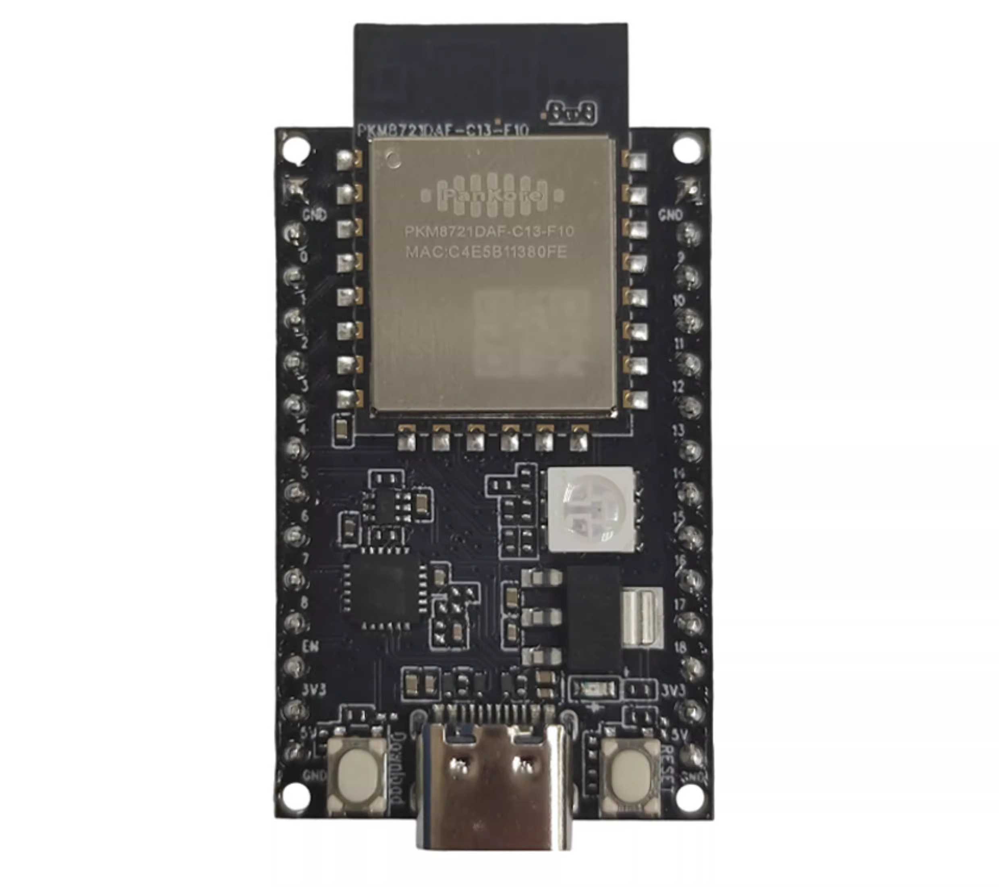

PKE8721DAF


The PKE8721DAF development board.
The PKE8721DAF is a Realtek RTL8721Dx development board built around the RTL8721DAF (QFN48, 4 MB NOR flash). NuttX runs on the KM4 application core — an Arm Cortex-M55-compatible core running at up to 345 MHz. See the RTL8721Dx chip documentation for the full SoC specifications and the vendor-SDK dependency.
Features
RTL8721DAF: Arm Cortex-M55-compatible KM4 core up to 345 MHz, 512 KB SRAM, 4 MB NOR flash
Wi-Fi 4 dual-band (2.4 / 5 GHz) station and SoftAP
SPI NOR flash (XIP)
LOG-UART console
Supported in this NuttX port:
NSH shell over the LOG-UART console
littlefs persistent storage mounted at
/data(a dedicated SPI NOR flash partition), backing the Wi-Fi key-value storeWi-Fi station and SoftAP through the
wapitoolDHCP client (STA) and DHCP server (SoftAP)
GPIO pins exposed as
/dev/gpioNcharacter devices (input, output and interrupt), driven directly on the SDK fwlib register layerGeneral-purpose UARTs exposed as
/dev/ttySNserial devices, driven directly on the SDK fwlib register layerI2C master buses exposed as
/dev/i2cNcharacter devices, driven directly on the SDK fwlib register layerSPI master buses exposed as
/dev/spiNcharacter devices, driven directly on the SDK fwlib register layerPWM output exposed as a
/dev/pwm0character device, driven directly on the SDK fwlib timer register layerADC channels exposed as an
/dev/adc0character device, driven directly on the SDK fwlib register layerOn-chip RTC exposed as a
/dev/rtc0date/time character device with alarm support, driven directly on the SDK fwlib register layerOn-chip watchdog exposed as a
/dev/watchdog0character device, driven directly on the SDK fwlib register layerGeneral-purpose timers exposed as
/dev/timer0and/dev/timer1character devices, driven directly on the SDK fwlib register layer
Configurations
Build and flash any of these per the RTL8721Dx build instructions; for the CMake build, source . tools/ameba/env.sh
pke8721daf first (the make build needs no sourcing).
$ ./tools/configure.sh pke8721daf:<config-name>
nsh
Networking-enabled NSH with littlefs at /data and the wapi Wi-Fi tool.
The console is the LOG-UART at 1500000 8N1 (the rate is configured by the
bootloader and inherited by NuttX). The Wi-Fi examples below are available from
this configuration.
gpio
Minimal NSH with the GPIO driver and the gpio example enabled (no Wi-Fi).
The board registers three pins from its pin table (see
boards/arm/rtl8721dx/pke8721daf/src/rtl8721dx_gpio.c): an output at
/dev/gpio0, an input at /dev/gpio1 and an interrupt pin at
/dev/gpio2. Edit that table to match a board’s wiring. Exercise them with
the example:
nsh> gpio -o 1 /dev/gpio0 # drive the output high
nsh> gpio /dev/gpio1 # read the input
nsh> gpio -w 1 /dev/gpio2 # wait for a falling-edge interrupt
Pins are encoded with the AMEBA_PA() / AMEBA_PB() helpers from
arch/arm/src/common/ameba/ameba_gpio.h (port A/B, pin 0-31), matching the
Ameba SDK PinName layout.
uart
Minimal NSH with the general-purpose UART driver and the serialrx /
serialblaster examples enabled (no Wi-Fi). The LOG-UART owns the console
and /dev/ttyS0, so the board registers UART0 from its table (see
boards/arm/rtl8721dx/pke8721daf/src/rtl8721dx_uart.c) as /dev/ttyS1 at
115200 8N1. Edit that table – controller, TX/RX pads and baud – to match a
board’s wiring. The TX/RX pads use the same AMEBA_PA() / AMEBA_PB()
encoding as the GPIO table; the driver muxes them to the UART function and
pulls RX high through the SDK ROM. Exercise the port with the examples (loop TX
back to RX, or wire it to a host serial adapter):
nsh> serialblaster # stream a test pattern out /dev/ttyS1
nsh> serialrx # receive and dump bytes from /dev/ttyS1
The line format can be changed at runtime through tcsetattr() (the config
enables CONFIG_SERIAL_TERMIOS). UART2 is shared with Bluetooth and is not
exposed by the driver.
i2c
Minimal NSH with the I2C master driver and the i2ctool (system/i2c)
enabled (no Wi-Fi). The board registers its I2C controllers from a table (see
boards/arm/rtl8721dx/pke8721daf/src/rtl8721dx_i2c.c): I2C0 at /dev/i2c0
on PB20/PB21 and I2C1 at /dev/i2c1 on PB18/PB19. Edit that table –
controller and SCL/SDA pads – to match a board’s wiring; the pads use the
same AMEBA_PA() / AMEBA_PB() encoding as the GPIO table and are muxed
to the I2C function through the SDK ROM. The I2C bus is open-drain, so fit
external pull-ups on SCL/SDA. Probe a bus with the tool:
nsh> i2c dev -b 0 0x03 0x77 # scan /dev/i2c0 for devices
spi
Minimal NSH with the SPI master driver and the spi tool
(system/spi) enabled (no Wi-Fi). The board registers two buses from its
table (see boards/arm/rtl8721dx/pke8721daf/src/rtl8721dx_spi.c): SPI0 at
/dev/spi0 with CLK/MOSI/MISO/CS on PA14/PA15/PA16/PA17 and SPI1 at
/dev/spi1 with CLK/MOSI/MISO on PB18/PB19/PB20 and a software chip-select
on PB21. Edit that table – controller, CLK/MOSI/MISO pads and CS pad – to
match a board’s wiring; the pads use the same AMEBA_PA() / AMEBA_PB()
encoding as the GPIO table and are muxed to the SPI function through the SDK
ROM, while the chip-select is driven as a plain GPIO. Exercise a bus with the
tool:
nsh> spi exch -b 1 -x 4 deadbeef # full-duplex transfer on /dev/spi1
pwm
Minimal NSH with the PWM driver and the pwm example
(examples/pwm) enabled (no Wi-Fi). The board registers one timer at
/dev/pwm0 (see boards/arm/rtl8721dx/pke8721daf/src/rtl8721dx_pwm.c):
TIM8 drives up to eight compare channels off one shared time base, so every
channel shares one frequency and each carries its own duty cycle. The example
table routes channel 1 to PB18 and channel 2 to PB19; edit it – one pad per
channel, AMEBA_PWM_PIN_NC for the unused ones – to match a board’s
wiring. The pads use the same AMEBA_PA() / AMEBA_PB() encoding as the
GPIO table and are muxed to the PWM function through the crossbar. Set
CONFIG_PWM_NCHANNELS to the number of channels used. Exercise it with the
example:
nsh> pwm -d 25 -f 1000 # 1 kHz, 25% duty on /dev/pwm0
adc
Minimal NSH with the ADC driver and the adc example enabled (no Wi-Fi).
The board registers its channels from a table (see
boards/arm/rtl8721dx/pke8721daf/src/rtl8721dx_adc.c): /dev/adc0 samples
CH0 on PB19 and CH1 on PB18. Edit that table – channel numbers and the analog
pad each is wired to – to match a board’s wiring; the external channels
CH0..CH6 map to pads PB19..PB13 and are muxed to the ADC function through the
SDK ROM, while internal channels carry AMEBA_ADC_PIN_NC. Every listed
channel is sampled, in order, on each trigger. Read the channels with the
example:
nsh> adc -n 1 # one sweep of /dev/adc0
rtc
Minimal NSH with the on-chip RTC driver and the alarm example enabled
(no Wi-Fi). The RTC is registered at /dev/rtc0 from the board bring-up
(boards/arm/rtl8721dx/pke8721daf/src/rtl8721dx_rtc.c); it has no board
wiring (it is an internal clock). The hardware stores year + day-of-year, so
the shared driver bridges to a full calendar. Read and set the clock with the
NSH date command, and arm a one-shot wakeup with the example:
nsh> date # read /dev/rtc0
nsh> date -s "Jun 16 12:00:00 2026" # set the RTC
nsh> alarm 10 # fire an alarm in 10 seconds
wdg
Minimal NSH with the on-chip watchdog driver and the wdog example
enabled (no Wi-Fi). The watchdog is registered at /dev/watchdog0 from the
board bring-up (boards/arm/rtl8721dx/pke8721daf/src/rtl8721dx_wdg.c); it
has no board wiring (it is an internal timer). Exercise it with the example,
which opens the device, sets a timeout, and pings it:
nsh> wdog # run the watchdog example
timer
Minimal NSH with the on-chip general-purpose timer driver and the timer
example enabled (no Wi-Fi). Two 32-bit basic timers clocked at 32.768 kHz are
registered from the board bring-up
(boards/arm/rtl8721dx/pke8721daf/src/rtl8721dx_timer.c) as /dev/timer0
(TIM1) and /dev/timer1 (TIM2); they have no board wiring (they are
internal). TIM0 is reserved by the boot ROM as the system timer and is not
exposed. Exercise a device with the example, which sets an interval and counts
the update interrupts:
nsh> timer -d /dev/timer0 # run the timer example on TIM1
Wi-Fi
Station (connect to an AP):
nsh> wapi psk wlan0 <password> 3
nsh> wapi essid wlan0 <ssid> 1
nsh> renew wlan0
SoftAP (become an access point, with a DHCP server for clients):
nsh> wapi mode wlan0 3
nsh> wapi psk wlan0 <password> 3
nsh> wapi essid wlan0 <ssid> 1
nsh> ifconfig wlan0 192.168.4.1 netmask 255.255.255.0
nsh> dhcpd_start wlan0
Stop the SoftAP with wapi essid wlan0 <ssid> 0.
License Exceptions
This board depends on Realtek vendor code that is not part of NuttX and is subject to its own license:
The prebuilt Wi-Fi / Bluetooth firmware image and the Realtek
ameba-rtosSDK libraries/headers linked into the image. See the SDK’s own license; the SDK is auto-fetched and is not redistributed in the NuttX tree.